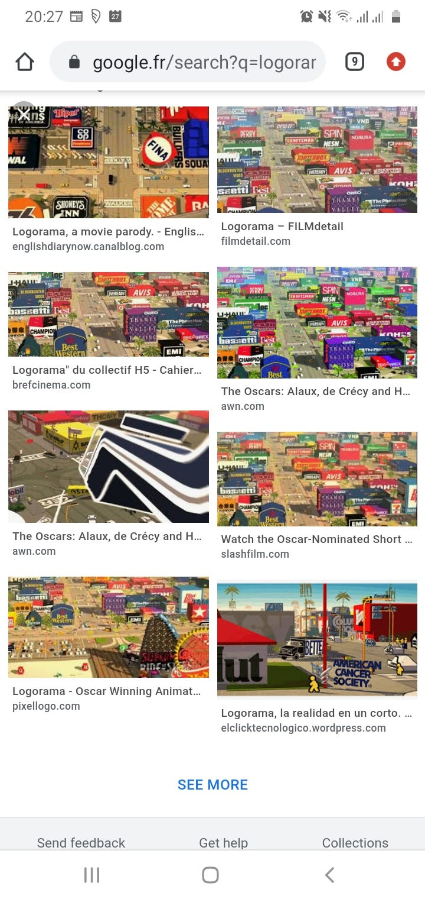

Jan 27, 2021
Open branded world
The open branded world is a colored world where brand names and systems and industry shape the form of the world and the behavior of the virtual life living into it. It is a visual experience and gameplay for experimenting with digital behaviors and quests around brands. Countries and cities are built and driven by brands, markets, and economical activities. You will have your avatar making his or her life into this branded world. Controlled by you and your digital life, your avatar will shape this world with your point of view. This sounds big for a small one-person game studio. That’s what I am building as a side project with this startup called embed… that architects and engineers third-party real-time embeddable systems that make websites and search engines smarter.
